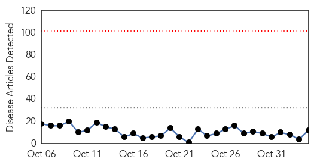
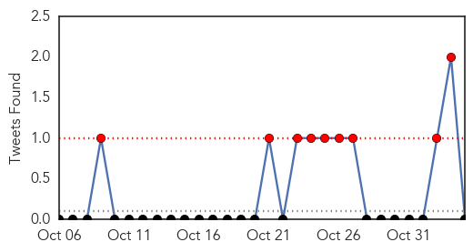
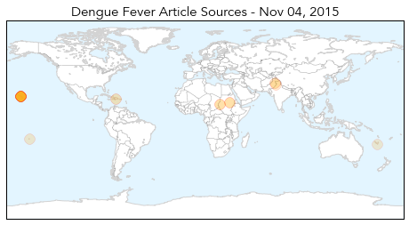
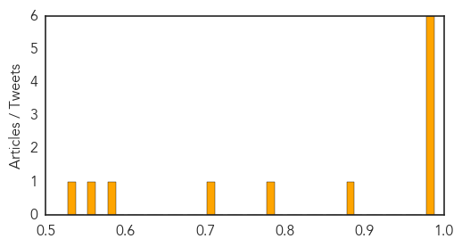

Dengue Fever
30-Day Web Trend
0 alerts, 0 warnings

30-Day Twitter Trend
9 alerts, 0 warnings

Article Locations
Article Confidences
Top Articles:
- 0.999
- 'Rampant Dengue fever' in Darfur states - Sudan
- 0.998
- Sudan: 'Rampant Dengue fever' in Darfur states
- 0.989
- YouTube Star's Dengue Fever Infection in Hawaii Highlights Dangers of Tropical Disease
- 0.988
- 11 cases of dengue fever confirmed on Big Island; Kona Community Hospital ‘overwhelmed’ by calls about possible infection
- 0.981
- Health officials: 23 confirmed cases of dengue fever on Big Isla
- 0.980
- Why 10 cases of dengue fever in Hawaii are much scarier than the rest
- 0.891
- Officials: Dengue fever could be here to stay, unless public helps
- 0.792
- Government starts fight on dengue as 97 die nationwide
- 0.715
- Dengue cases fall as temperature drops
- 0.590
- Dip in larva occurrence kindles dengue elimination hopes
- 0.573
- Australian Department of Foreign Affairs and Trade
- 0.527
- Australian Department of Foreign Affairs and Trade
Top Tweets:
-
No tweets found for Nov 04, 2015
Influenza
30-Day Web Trend
1 alerts, 0 warnings

30-Day Twitter Trend
4 alerts, 0 warnings

Article Locations

Article Confidences

Top Articles:
- 0.996
- Influenza season is coming
- 0.959
- CDC hopes for more effective flu shot
- 0.931
- Free FluMist clinic for children Sat. Nov. 7 in Affton
- 0.848
- Cape Breton's first confirmed case of the 2015 flu
- 0.830
- ESCMID and ESWI call on EU health services to use hospital flu vaccination uptake rankings
- 0.806
- Today's stories from newspapers in Caledon
- 0.806
- Today's stories from newspapers in Caledon
- 0.806
- Today's stories from newspapers in Caledon
- 0.806
- Today's stories from newspapers in Caledon
- 0.806
- Today's stories from newspapers in Caledon
- 0.806
- Today's stories from newspapers in Caledon
- 0.751
- November 4, 2015 Archives
- 0.751
- November 4, 2015 Archives
- 0.751
- November 4, 2015 Archives
- 0.503
- Sinovac to Participate in Morgan Stanley Asia Pacific Summit
Top Tweets:
-
No tweets found for Nov 04, 2015